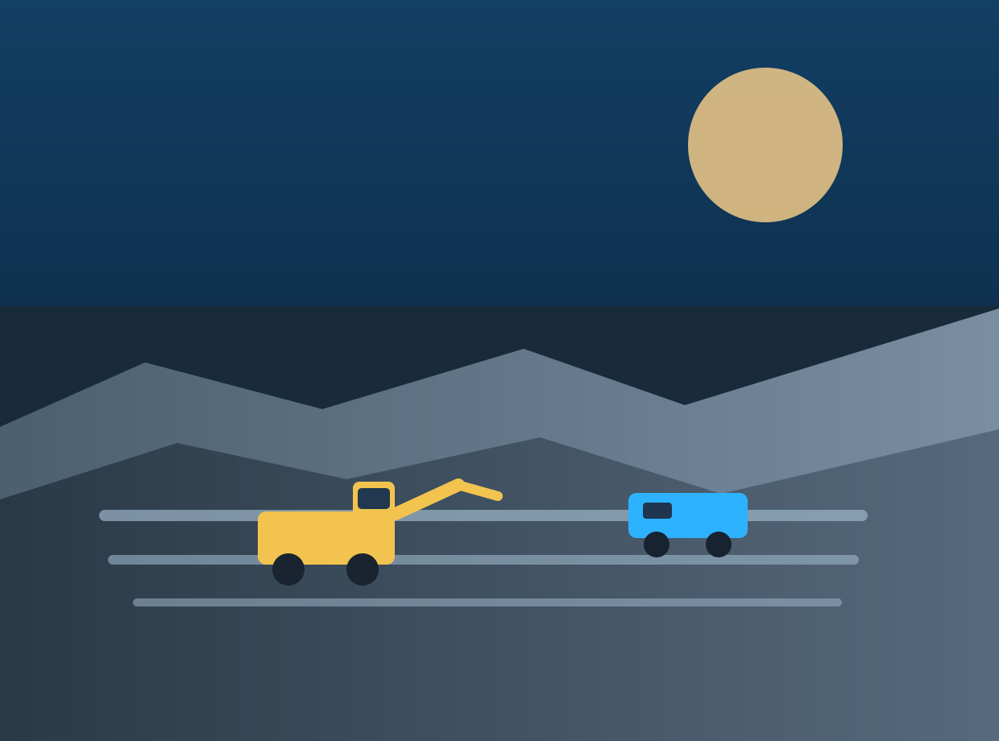
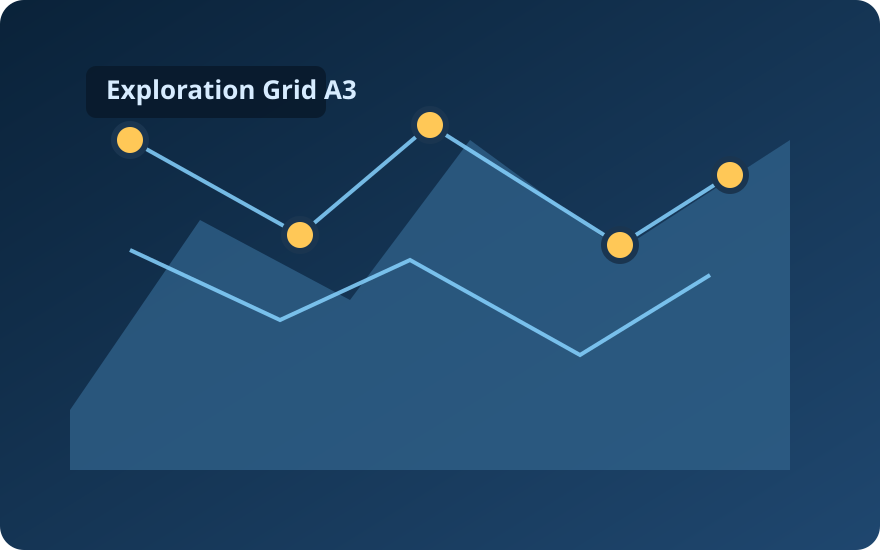
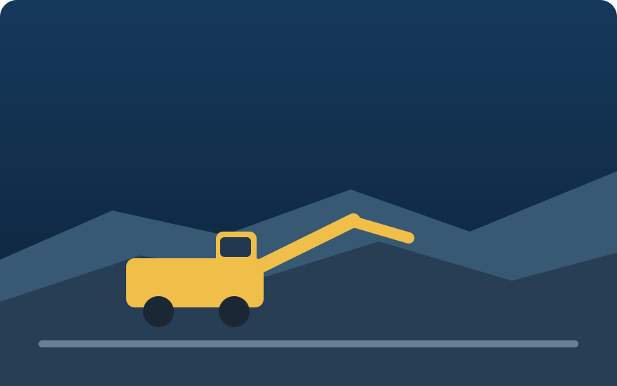

24/7
Integrated site monitoring
Shilungwa Mining and Resources
We combine disciplined extraction, resilient logistics, and responsible environmental stewardship to deliver high-value resources across regional and global markets.

24/7
Integrated site monitoring
99.2%
Logistics consistency
14+
Strategic industry partners
0 Harm
Safety-first operating culture
Who We Are
Shilungwa Mining and Resources is committed to reliable production, transparent governance, and long-term value for communities, employees, and industry partners.
Our integrated operating model combines exploration intelligence, disciplined site execution, and resilient downstream logistics to keep delivery strong in changing market conditions.

What We Do
Data-driven exploration programs that identify and validate high-potential deposits while limiting environmental disruption.

Scalable extraction workflows supported by modern equipment, predictive maintenance, and optimized site productivity.
End-to-end processing and delivery systems designed for quality assurance, route reliability, and reduced operational downtime.
How We Deliver
Geological intelligence and site analytics identify viable reserves with precision and speed.
Modular development plans bring operations online safely while controlling risk and capital exposure.
Processing and logistics systems maintain quality, predictability, and traceability to market.
Responsible Growth
Latest Focus
Expanded predictive maintenance and live performance dashboards to increase throughput and reduce downtime.
Corridor and terminal capability upgrades to strengthen export reliability and lead times.
Skills development and supplier participation initiatives focused on inclusive local growth.
Connect
For project opportunities, supply partnerships, or investor engagement, connect with our team and we will respond promptly.